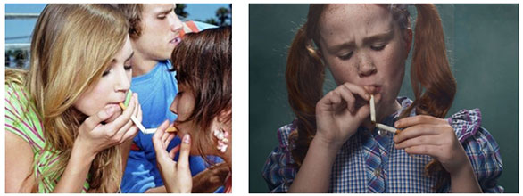

Мой ребенок курит! Родители, без паники.
Опубликовано 25.07.2013, 19:51 | Автор: domanova
-Арина, я не собираюсь тебя ругать, запрещать тебе что-либо или наказывать. Просто скажи мне честно – ты куришь?
- Да курю.
- Тебе это нравится?
- Не знаю мама, отстань!
- Ты хочешь курить или нет, ответь, пожалуйста?
- Да хочу, мама! Надоест – брошу!(((
Знакомая ситуация? Знаете, нам – родителям порой кажется, что мы знаем все о наших детях. Ведь мы были с ними с самых пеленок, мы сопровождали их в детский садик, отдавали в первый класс. Но время идет, и, к нашему сожалению, наши дети растут, становятся все более самостоятельными и неизбежно начинают жить своей отдельной жизнью, в которую зачастую не особо посвящают своих мам и пап.
У меня 15-летняя дочь Арина. И у нас всегда были очень доверительные отношения. Я старалась быть для нее подругой, а не просто мамой. Но пошли школьные времена, Арина становилась старше, проявились сложности характера... Весь этот юношеский максимализм, отсутствие чувство меры – все это ерунда, мы все были такими в этом возрасте. Но, когда в 8 классе в ее сумочке я нашла сигареты – это был для меня шок. Я в своей жизни – курила всего два раза и старалась с детства прививать дочери, что курить - плохо, а здоровый образ жизни - хорошо. Но оказалось все мои нравоучения пошли насмарку!
После того, как я обнаружила у своей дочери сигареты, я решила поговорить с ней! Нет, без ремня, без криков и скандалов. Этим бы я точно ничего не добилась. Я просто спросила ее:
- Арина, я не собираюсь тебя ругать, запрещать тебе что-либо или наказывать. Просто скажи мне честно – ты куришь?
… Что было дальше Вы уже знаете. Я не стала скандалить и просто примирительно закончила эту беседу:
- Что ж хорошо, будем считать, что мы поняли друг друга…
Я адекватно понимала, что разговорами ничего не решить. Так же, как и понимала, что для курильщика «надоест - брошу» - самоутешение и самооправдание, а не проявление силы воли. Как правило, чем дольше человек курит, тем тяжелее ему потом отказаться от этой привычки. Я не могла позволить своей дочери губить свое здоровье и засела за интернет в поисках какого-нибудь современного и реально эффективного средства против табакозависимости.
Для меня важно было, чтобы средство было безопасным для здоровья и продавалось по адекватной цене, а не за бешенные деньги. Кроме того, реально эффективное средство должно быть проверенным, все-таки речь идет о ребенке.
За один только вечер я пересмотрела столько пластырей, мазей, таблеток, различных методик и врачей, что мне аж дурно стало. Каждый сайт обещает победить курение, одними и теми же картинками, слоганами, заголовками. Даже отзывы кое-где совпадали представьте себе. Я уже думала разочароваться в своей идее - найти средство для моей юной курильщицы, как вдруг наткнулась на сайт зеросмока!
Это было непохоже ни на что другое. Наверно поэтому я и решила его заказать. Для тех, кто еще не знает, что такое «зеросмок», я коротко расскажу, а подробнее можете почитать на этом сайте. Это средство против курения, а точнее биомагниты для терапевтического массажа. Выглядят внешне они, не поверите, как сережки и одеваются на уши с обеих сторон. Грубо говоря – эдакие клипсы, которые покрыты золотом и держаться за счет магнитов. Их фишка в том, что они фиксируются на определенной точке на ухе, отвечающей за зависимость человека. В общем-то в инструкции все подробно об этом написано, так что спокойно можно заказывать.
В общем, эти «биомагнитные сережки» я презентовала дочери, как раз был повод – она собиралась с подругами на выходные праздновать чей-то день рождения загород. Она конечно и подумать не могла, что это не простые клипсы, а Зеросмок – средство для отвыкания от курения.
По приезду, когда я забрасывала ее кофту в стирку, я демонстративно и ненавязчиво заметила:
- Фу, какая прокуренная вся! Опять курила там…
- Ой, мама, да хорош! Там все курили просто, вот и пропахли вещи. А у меня желания покурить нет. Не мое это, так что можешь успокоиться.
Я была самой счастливой матерью в тот момент, очень горда за свою дочку, ну и, конечно, благодарна тому, кто придумал и продает Zerosmoke. Конечно, моя доча еще потом пару раз покуривала, но сигарет я у нее уже не находила.
А через месяц мы уже вместе пошли на фитнесс и даже разговоров о сигаретах больше не было! Мы стали еще ближе, потом, я, конечно, рассказала ей правду про эти «сережки», она очень удивилась! Мы вместе посмеялись и с курением было покончено.
Учитывая то, что моя Арина носила биомагниты далеко не всегда, а как приходилось, а эффект все равно не заставил себя ждать, то думаю тот, кто будет применять Zerosmoke целенаправленно, тот точно достигнет нужного результата и куда быстрее, чем мы.
Так что мой вам совет, дорогие родители: наши дети – никуда от нас не убегают, главное уметь с ними правильно разговаривать и иметь немного хитрости!)